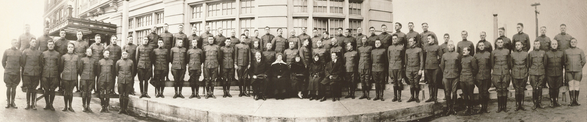
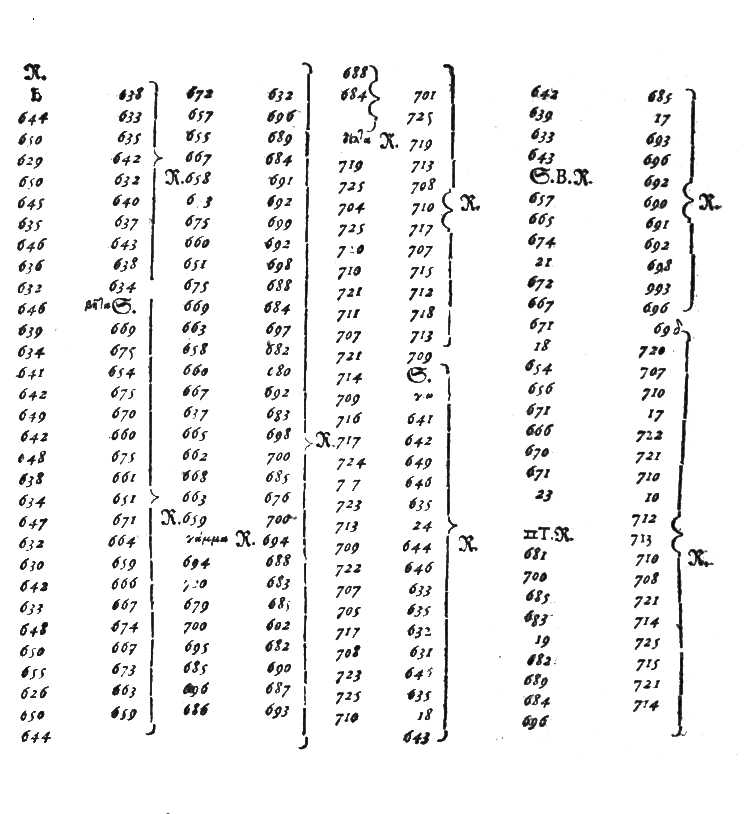

| Sp. | 0 | ||
| A | 1 | 00000 | .- |
| B | 2 | 00001 | -... |
| C | 3 | 00010 | -.-. |
| D | 4 | 00011 | -.. |
| E | 5 | 00100 | . |
| F | 6 | 00101 | ..-. |
| G | 7 | 00110 | --. |
| H | 8 | 00111 | .... |
| I | 9 | 01000 | .. |
| J | 10 | -"- | .--- |
| K | 11 | 01001 | -.- |
| L | 12 | 01010 | .-.. |
| M | 13 | 01011 | -- |
| N | 14 | 01100 | -. |
| O | 15 | 01101 | --- |
| P | 16 | 01110 | .--. |
| Q | 17 | 01111 | --.- |
| R | 18 | 10000 | .-. |
| S | 19 | 10001 | ... |
| T | 20 | 10010 | - |
| U | 21 | 10011 | ..- |
| V | 22 | -"- | ...- |
| W | 23 | 10100 | .-- |
| X | 24 | 10101 | -..- |
| Y | 25 | 10110 | -.-- |
| Z | 26 | 10111 | --.. |
| , | 27 | ||
| . | 28 | ||
| ? | 29 | ||
| ! | 30 |
Professor Krankenstein was the most influential genetic engineer of his time.
When, in the spring of 2030, he almost incidentally invented the most terrible biological weapon known to humanity it took him about three seconds to realize that should his invention fall into the hands of one of the superpowers -- or into the hands of any common idiot, really -- it could well mean the end of the human race.
He wasted no time. He destroyed all the artifacts in the lab. He burned all the notes and hard disks of all the computers they’ve used in the project. He seeded false information all over the place to lead future investigators off the track.
Now, left with the last remaining copy of the doomsgerm recipe, he was contemplating whether to destroy it.
Yes, destroying it would keep the world safe. But if such a breakthrough in genetic engineering was used in a different way it could have solved the hunger problem by producing enough artificial food to feed the swelling population of Earth. And if global warming went catastrophic, it could have been used to engineer microorganisms super-efficient at sequestering carbon dioxide and methane from atmosphere.
In the end he decided not to destroy but rather to encrypt the recipe, put it into a tungsten box, encase the box in concrete and drop it from a cruise ship into Mariana Trench.
The story would have ended there if it was not for one Hendrik Koppel, a rather simple-minded person whom professor Krankenstein hired to help him to move the tungsten-concrete box around. Professor didn’t even met him before he destroyed all his doomsgerm research. Still, Hendrik somehow realized that the issue was of interest to superpowers (Was professor Krankenstein sleep-talking?) and sold the information about the location of the box to several governments.
By the beginning of October the news hit that an American aircraft carrier is heading in the direction of Mariana Trench.
Apparently, there was also a Russian nuclear submarine on its way to the same location.
Chinese government have sent a fleet of smaller, more versatile, oceanographic vessels.
After the initial bout of despair, professor Krankenstein realised that with his superior knowledge of the position of the box he could possibly get to the location first and destroy the box using an underwater bomb.
He used his life savings to buy a rusty old ship called Amor Patrio, manned it with his closest collaborators and set up for Pacific Ocean.
...
Things haven't gone well. News reported that Americans and Chinese were approaching the area while Amor Patrio's engine broke and the crew was working around the clock to fix it.
Finally, they fixed it and approached Mariana Trench.
It was at that point that the news reached them: The box was found by Russians and transported to Moscow. It was now stored in the vault underneath KGB headquarters. There was a whole division of spetsnaz guarding the building. The building itself was filled with special agents, each trained in twelve ways of silently killing a person.
Continue reading at section 92.
DOUGLAS, Ariz. Jan, 5. -- The two American army officers whose seizure Friday afternoon resulted in a fight between United States cavalrymen in which two of the latter were killed, one wounded and three taken prisoner, were captured on American soil, according to the announcement today by Colonel George H. Morgan, Arizona district commander, who ordered an investigation immediately after learning of the affair.
"The incident is closed as far as I am concerned," the colonel said. "It developed today there had been frequent sniping by Mexican patrols at our men in the vicinity of the place where the figthing took place, but I did not know of this until today. I think the precipitate action of the soldiers in crossing the line to rescue their officers who had been seized on United States soil partly was due to the enmity the Mexicans have shown toward them. It is a regrettable affair and there is no prospect of a repetition or any further local difficulty over it."
According to the report of the commander the cavalry troop had left Douglas Friday for a practice march, most of the members being recruits, and at noon had camped in the vicinity of the Slaughter ranch, 18 miles east of here. Serveral hunting parties were formed, among them being one composed of Captain David H. Blakelock and Lieutenant George J. Lind. When the officers were within approximately 200 yards of the international line and headed east they suddenly were covered by the guns of four armed Mexicans, commanded to halt and informed they were prisoners. At the same time four Mexican customs officers opened fire upon a party of three privates, soldiers who were rabbit-hunting farther away from the line and about 200 yards from the officers. Two of the soldiers dropped to earth and returned the fire, holdng their ground while the third ran to camp to tell his comrades what had taken place.
Take the number from the previous section, factorize it into primes and continue reading at the section pointed to by the largest prime.
Imagine it's two o'clock. What will be the time in five hours?
Seven o'clock, right? It's easy. 2 + 5 = 7.
But here's a trick question: It's ten o'clock. What time will it be in five hours?
10 + 5 = 15, but there's no such thing as fifteen o'clock.
When the hand moves beyond 12 it's one o'clock again.
What we can do is to do the addition and then subtract 12 if the result is larger than 12: 10 + 5 - 12 = 3.
And here's a question for you: Imagine your friend calls you at 8:00am on Monday and says you are going to meet in 154 hours. On which weekday and exactly at which hour will you meet?
Once you've solved the problem take that time (the hours part) and multiply it by seven. Continue reading at that section.
No full story yet, but let's assume a king is at a quest. At some point he realizes that a small item, say a specific hairpin, is needed to complete the quest. He clearly remembers he used to own the hairpin, but he has no idea whether it's still in his possession and if so, where exactly it is. He sends a messenger home asking his counsellors to look for the hairpin and let him know whether they've found it or not.
King's enemies need that information as well so the next day, when the messager is returning, they ambush him and take the message. Unfortunately, the message is encrypted. The messager himself knows nothing about the pin.
Many experienced cryptographers are working around the clock for days in row to decrypt the message but to no avail.
Finally, a kid wanders into the war room. She asks about what they are doing and after some thinking she says: "I know nothing about the high art of cryptography and in no way I can compare to esteemed savants in this room. What I know, though, is that King's pallace has ten thousand rooms, each full of luxury, pictures and finely carved furniture. To find a hairpin in such a place can take weeks if not months. If there was no hairpin it would take at least that long before they could send the messenger back with negative reply. So, if the messager was captured on his way back on the very next day, it can mean only a single thing: The hairpin was found and your encrypted message says so."
Here Legrand, having re-heated the parchment, submitted It my inspection. The following characters were rudely traced, in a red tint, between the death's-head and the goat:
53++!305))6*;4826)4+.)4+);806*;48!8`60))85;]8*:+*8!83(88)5*!;
46(;88*96*?;8)*+(;485);5*!2:*+(;4956*2(5*-4)8`8*; 4069285);)6
!8)4++;1(+9;48081;8:8+1;48!85;4)485!528806*81(+9;48;(88;4(+?3
4;48)4+;161;:188;+?;"But," said I, returning him the slip, "I am as much in the dark as ever. Were all the jewels of Golconda awaiting me on my solution of this enigma, I am quite sure that I should be unable to earn them."
"And yet," said Legrand, "the solution is by no means so difficult as you might be led to imagine from the first hasty inspection of the characters. These characters, as any one might readily guess, form a cipher --that is to say, they convey a meaning; but then, from what is known of Kidd, I could not suppose him capable of constructing any of the more abstruse cryptographs. I made up my mind, at once, that this was of a simple species --such, however, as would appear, to the crude intellect of the sailor, absolutely insoluble without the key."
"And you really solved it?"
"Readily; I have solved others of an abstruseness ten thousand times greater. Circumstances, and a certain bias of mind, have led me to take interest in such riddles, and it may well be doubted whether human ingenuity can construct an enigma of the kind which human ingenuity may not, by proper application, resolve. In fact, having once established connected and legible characters, I scarcely gave a thought to the mere difficulty of developing their import.
"In the present case --indeed in all cases of secret writing --the first question regards the language of the cipher; for the principles of solution, so far, especially, as the more simple ciphers are concerned, depend on, and are varied by, the genius of the particular idiom. In general, there is no alternative but experiment (directed by probabilities) of every tongue known to him who attempts the solution, until the true one be attained. But, with the cipher now before us, all difficulty is removed by the signature. The pun on the word 'Kidd' is appreciable in no other language than the English. But for this consideration I should have begun my attempts with the Spanish and French, as the tongues in which a secret of this kind would most naturally have been written by a pirate of the Spanish main. As it was, I assumed the cryptograph to be English.
"You observe there are no divisions between the words. Had there been divisions, the task would have been comparatively easy. In such case I should have commenced with a collation and analysis of the shorter words, and, had a word of a single letter occurred, as is most likely, (a or I, for example,) I should have considered the solution as assured. But, there being no division, my first step was to ascertain the predominant letters, as well as the least frequent. Counting all, I constructed a table, thus:
Of the character 8 there are 33.
" ; " 26.
" 4 " 19.
" + " 16.
" ) " 16.
" * " 13.
" 5 " 12.
" 6 " 11.
" ! " 8.
" 1 " 8.
" 0 " 6.
" 9 " 5.
" 2 " 5.
" : " 4.
" 3 " 4.
" ? " 3.
" ` " 2.
" - " 1.
" . " 1."Now, in English, the letter which most frequently occurs is e. Afterwards, the succession runs thus: a o i d h n r s t u y c f g l m w b k p q x z. E however predominates so remarkably that an individual sentence of any length is rarely seen, in which it is not the prevailing character.
"Here, then, we have, in the very beginning, the groundwork for something more than a mere guess. The general use which may be made of the table is obvious --but, in this particular cipher, we shall only very partially require its aid. As our predominant character is 8, we will commence by assuming it as the e of the natural alphabet. To verify the supposition, let us observe if the 8 be seen often in couples --for e is doubled with great frequency in English --in such words, for example, as 'meet,' 'fleet,' 'speed, 'seen,' 'been,' 'agree,' &c. In the present instance we see it doubled less than five times, although the cryptograph is brief.
"Let us assume 8, then, as e. Now, of all words in the language, 'the' is the most usual; let us see, therefore, whether they are not repetitions of any three characters in the same order of collocation, the last of them being 8. If we discover repetitions of such letters, so arranged, they will most probably represent the word 'the.' On inspection, we find no less than seven such arrangements, the characters being ;48. We may, therefore, assume that the semicolon represents t, that 4 represents h, and that 8 represents e --the last being now well confirmed. Thus a great step has been taken.
"But, having established a single word, we are enabled to establish a vastly important point; that is to say, several commencements and terminations of other words. Let us refer, for example, to the last instance but one, in which the combination ;48 occurs --not far from the end of the cipher. We know that the semicolon immediately ensuing is the commencement of a word, and, of the six characters succeeding this 'the,' we are cognizant of no less than five. Let us set these characters down, thus, by the letters we know them to represent, leaving a space for the unknown--
t eeth."Here we are enabled, at once, to discard the 'th,' as forming no portion of the word commencing with the first t; since, by experiment of the entire alphabet for a letter adapted to the vacancy we perceive that no word can be formed of which this th can be a part. We are thus narrowed into
t ee,and, going through the alphabet, if necessary, as before, we arrive at the word 'tree,' as the sole possible reading. We thus gain another letter, r, represented by (, with the words 'the tree' in juxtaposition.
"Looking beyond these words, for a short distance, we again see the combination ;48, and employ it by way of termination to what immediately precedes. We have thus this arrangement:
the tree ;4(+?34 the,or substituting the natural letters, where known, it reads thus:
the tree thr+?3h the."Now, if, in place of the unknown characters, we leave blank spaces, or substitute dots, we read thus:
the tree thr...h the,when the word 'through' makes itself evident at once. But this discovery gives us three new letters, o, u and g, represented by + ? and 3.
"Looking now, narrowly, through the cipher for combinations of known characters, we find, not very far from the beginning, this arrangement,
83(88, or egree, which, plainly, is the conclusion of the word 'degree,' and gives us another letter, d, represented by !.
"Four letters beyond the word 'degree,' we perceive the combination
46(;88*."Translating the known characters, and representing the unknown by dots, as before, we read thus:
th.rtee.an arrangement immediately suggestive of the word 'thirteen,' and again furnishing us with two new characters, i and n, represented by 6 and *.
"Referring, now, to the beginning of the cryptograph, we find the combination,
53++!."Translating, as before, we obtain
.good,which assures us that the first letter is A, and that the first two words are 'A good.'
"To avoid confusion, it is now time that we arrange our key, as far as discovered, in a tabular form. It will stand thus:
5 represents a
! " d
8 " e
3 " g
4 " h
6 " i
* " n
+ " o
( " r
; " t"We have, therefore, no less than ten of the most important letters represented, and it will be unnecessary to proceed with the details of the solution. I have said enough to convince you that ciphers of this nature are readily soluble, and to give you some insight into the rationale of their development. But be assured that the specimen before us appertains to the very simplest species of cryptograph. It now only remains to give you the full translation of the characters upon the parchment, as unriddled. Here it is:
'A good glass in the bishop's hostel in the devil's seat twenty-one degrees and thirteen minutes northeast and by north main branch seventh limb east side shoot from the left eye of the death's-head a bee line from the tree through the shot fifty feet out.'"
"But," said I, "the enigma seems still in as bad a condition as ever. How is it possible to extort a meaning from all this jargon about 'devil's seats,' 'death's-heads,' and 'bishop's hostel'?"
"I confess," replied Legrand, "that the matter still wears a serious aspect, when regarded with a casual glance. My first endeavor was to divide the sentence into the natural division intended by the cryptographist."
"You mean, to punctuate it?"
"Something of that kind."
"But how was it possible to effect this?"
"I reflected that it had been a point with the writer to run his words together without division, so as to increase the difficulty of solution. Now, a not overacute man, in pursuing such an object, would be nearly certain to overdo the matter. When, in the course of his composition, he arrived at a break in his subject which would naturally require a pause, or a point, he would be exceedingly apt to run his characters, at this place, more than usually close together. If you will observe the MS., in the present instance, you will easily detect five such cases of unusual crowding. Acting on this hint, I made the division thus:
'A good glass in the bishop's hostel in the devil's --twenty-one degrees and thirteen minutes --northeast and by north --main branch seventh limb east side --shoot from the left eye of the death's-head --a bee-line from the tree through the shot fifty feet out.'"
"Even this division," said I, "leaves me still in the dark."
Johannes Trithemius was an medieval German abbott known for his book Polygraphia which is said to be the first published book on cryptography.
However, in addition to Polygraphia he published a book called Steganographia which seems to be about magic. It describes a way how to deliver secret messages with the help of angels. The book induced a lot of opposition. Those who have read it in manustcipt were frightened by what appeared to be demonic names they thought the book is not appropriate for a pious Christian reader. When the book was finally published in 1606, 90 years after Trithemius' death, it also contained a short work called Clavis (The Key) which in very simple terms explains how what seemed to be incomprehensible diabolic language in book I and book II are actually ciphertexts. Despite that the book was believed to be about magic and was put on the Index of Prohibited Books by Catholic church in 1609.
All that being said, book III is not explained in Clavis. Moreover it's much shorter than previous two books and contains almost no explanatory text. It's possibly unfinished.
This difference between books I & II and book III led some experts to believe that while the former two books are about cryptography, with all the blah-blah about the angels being only a cover, the book III is really about magic.
In this exercise we are going to decode book III which remained unsolved for 500 years and prove that Trithemius was not a magician after all and there was not reason for putting his work on the Index.
You can check the messages from book III in section LXXXVIII.
Look at them carefully and try to notice anything that may help you decypher them.
Don't be lazy and actually take a look. This is your chance of getting a feeling of what the actual cryptanalysis feels like.
If you've spent at least XV minutes trying to solve the puzzle and now you are out of your wits proceed to section LXXV and get your first hint.
A portal suddenly opened on the starboard ejecting a fleet of imperial pursuit vessels. The propulsion system of my ship got hit before the shield activated. I’ve tried to switch on the backup drive but before it charged to as much as 5% I was already dangling off a dozen tractor beams.
It wasn’t much of a fight. They’ve just came and picked me up as one would pick up a box of frozen strawberries in a supermarket.
I must have passed out because of pressure loss. The next thing I remember is being in a plain white room with my hands cuffed behind my back.
There was a sound of door opening and a person walked into my field of vision.
It took me few seconds to realize who the man was. He was wearing an old-fashioned black suit and a bowler hat. No sign of the baggy trousers seen on his official portraits. But then he smiled and showed the glistening golden teeth on the left side and his own healthy camel-like teeth on the right and the realization hit me.
It was him. Beylerbey Qgdzzxoglu in person.
“Peace be upon you,” he said. He sat down at the other side of the coffee table, made himself comfortable and put his umbrella on the floor.
“We have a little matter to discuss, you and I,” he said.
He took a paper out of his pocket and put in on the coffee table, spinning it so that I can read it.
“Attack the Phlesmus Pashalik,” said one line.
“Attack the Iconium Cluster,” said the line below it.
The rest of the sheet was empty except for holographic seal of the High Command of Proximian Insurgency.
"Comandante Ribeira is no idiot," he said, "And this scrap of paper is not going to convince me that he's going to split his forces and attack both those places at the same time."
He looked at me and continued: "Our strategic machines are vastly more powerful than Proximian ones. They've been running hot for the past week and our lab rats tell us that there's no way to win that way."
The mention of the lab rats was weird but I guessed he had just meant the scientists.
"You are right, O leader of men," I said.
I knew that this kind of empty flattery was used at the Sublime Porte but I was not sure whether it wasn't reserved for the sultan alone. Anyway, it was worth a try.
Qgdzzxoglu smiled snarkily but haven't said anything. Maybe I was going to live in the end.
"I have no loyalty for the Proximian cause. Before I was conscripted at a gunpoint I have lived happily and had no thoughts of betrayal. So now, hoping for your mercy, I am going to cast away all deception and disclose the true meaning of this message to you."
"It is a code, O you, whose slipper weights heavily upon the neck of nations," I said.
Qgdzzxoglu raised his eyebrows a little. I took that as an invitation to continue.
"The recipient is supposed to ignore the first command and only follow the second one."
I hoped I haven't overdone it. Being honest with the enemy is hard.
He took the paper from the table and looked at it intently:
"So you are trying to convince me that de Ribeira is going to attack Iconium."
He gave me a sharp look, apparently trying to determine whether I was lying or not.
"You know what?' he said: "It's not like we are completely blind. We have spies in the Insurgency and we've got our reports. And our reports say that rebels will try to trick us into moving all our forces to Iconium and then attack the pashalik while it's undefended. And if that's what you are trying to do bad things are going to happen to your proboscis."
Yikes. If he believes that I am here to plant false information this is not going to be fun. But, on the other hand, he may be bluffing, trying to confuse me and make me give some hints about whether I was lying.
I've lowered my head: "I have no intention to suffer to win Ribeira's war. But the truth is truth and your sources are wrong, O mighty. The Most Holy Cross, the John XXIII and Our Lady of Africa have already got a command to move to Iconium cluster. And you should expect at least comparable fire power coming from elsewhere, even if this particular message is never delivered."
"That's exactly what you'd say if you wanted me to leave Phlesmus undefended." He tapped his cheek: "I wonder whether I should torture you a little. Just in case."
The honesty, apparently, wasn't working. I had to try a new strategy. This one was going to be risky. But who cared. I was in a pretty deep trouble either way.
"Wait, your excellence!" I exclaimed: "You were right! The code is to follow on the first command and ignore the second one! Ribeira is going to attack Phlesmus!"
Qgdzzxoglu looked surprised: "You were lying before?"
"Yes! Please don't torture me! It's going to be Phlesmus pashalik!"
"Coward," beylerbey said with disgust.
He called on the guards to escort me, presumably to the torture chamber.
"No! I wasn't lying all along! It's Iconium cluster that's going to be attacked!"
Qgdzzxoglu picked up his umbrella and stood up, frowning. This was my last chance.
"As you can see," I said and he, being already on his leave, turned back, surprised by sudden calmness in my voice: "I am willing to admit anything. I am happy to say that it's Phlesmus that's going to get attacked. I am all right saying that it's Iconium. If I was here to nudge you to a particular course of action I wouldn't do that. Would I?"
That made him pause for a second.
"What is the message saying then?" he asked.
"They are going to attack Iconium cluster, as I've told you in the begining."
"You may have said all that you did just to escape the torture."
"You've already noticed that I am not the blabbering idiot I pretended to be to get your attention. If I was scared to death by the threat of torture I would still be trying to come up with an answer that would satisfy you, no matter whether it would be true or false."
"Hmm," he said: "But you may be also specially trained in psychological manipulation and the entire show was only to convince me that you are honest. Let me think about it for a moment."
He sat down again, closed his eyes and dived into meditation. There was nothing more I could do. I kept silent, leaving him alone with his thoughts.
He awakened from the stupor after a minute or so.
"Today," he said, maybe a little bit sadly: "The God, the Compassionate, the Merciful have taught me that there are secrets that cannot be given away. You cannot give them away to save yourself from torture. You cannot give them away to save your kids from being sold to slavery. You cannot give them away to prevent the end of the world. You cannot give them away and whether you want to or not matters little."
He summoned the guards and I was dragged away towards my uncertain fate.

Dear Grandma,
I hope you are well. Also, best wishes for you birthday last month.
I am writing you because I have a problem you may be able to solve.
You've been visiting us recently and so you know how we always figth with Judy about splitting of the chores. You may have also noticed that Judy is much louder than I am and also a big whiner. In the end that means that I am always assigned more work than Judy. And that's not fair.
I know that Judy -- although she ignores whatever she is said -- actually respects you and often does what you say. Can you please write her a letter and ask her to play fair?
With love,
Toddy
Dear Grandma,
I've shown your letter to Judy. She read it and said that she recognizes the system. She said it was used by prisoners in concentration camps. When they had to split bread, one would cut it in two, the other one would choose the half to take. You could have told me. I am not a little boy anymore, you know.
Anyway, we've tried it with chores. I've spent two hours devising a perfect split. It went into smallest details assigning even tasks like vacuuming between radiator fins which we do, like, twice a year. If we had adopted that plan everything would have been well. However, Judy spoiled everything and choose the part I was planning to do. How is that supposed to be fair?
With love,
Toddy
Dear Grandma,
We've tried re-splitting the chores maybe twenty or thirty times in a row. First I proposed a split and Judy chose the easier part. Then I proposed a different split and Judy again took the easier part. When that went on for a while I said it was not fair and that I want to choose as well. So Judy proposed a split and I chose the easy half (no vacuuming!) Then she proposed a different split with vacuuming of ground floor in one part and vacuuming of top floor in the other part. There was no way to avoid vacuuming altogether. Anyway, after like two hours we've got a split that we were both happy with.
So, thanks for the advice. It may work in the end. And the best thing is that Judy can't whine now. If she does I would just propose to exchange our chores. And she knows that so she doesn't even try.
With love,
Toddy
Dear Grandma,
It turns out to be more complicated than I thought. I felt I've been doing more work than Judy so I proposed to add vacuuming of the guest room to her chores. I was right because she accepted it. The I proposed adding vacuuming of the small toilet by the guest room to her chores and she accepted it again. Then I proposed that she vacuums my room as well and she chose to exchange the chores. Now I was left with almost all of the vacuuming!
Now here comes the unfair part: I've backtracked and proposed that she doesn't vacuum my room, just the guest room and the toilet. And she REFUSED to exchange to chores back. That's unfair! She agreed with that before! Can you please write her and say that people should always keep their word?
Thanks!
Toddy
Dear Grandma,
Yes, I understand that I've challenged the status quo and that I should bear the consequences. The things have moved on here though. As angry as I was I stopped caring about keeping the living room (to be cleaned up by Judy) clean. I mean, if she doesn't bother to keep her word why should I make life easier for here?
Judy yelled at me and made a mess in the kitchen (to be cleaned up by me).
This is getting ridiculous. Now we both have more work to do than we used to while we were figthing. Can you please write her a letter and ask her to stop?
Thanks!
Todd
Here's a simple game for kids that shows how asymmetric encryption works in principle, makes the fact that with only public key at your disposal encryption may be easy while decryption may be so hard as to be basically impossible, intuitive and gives everyone a hands-on experience with a simple asymmetric encryption system.
Here's how it works:
Buy a dictionary of some exotic language. The language being exotic makes it improbable that any of the kids involved in the game would understand it. Also, it makes cheating by using Google Translate impossible.
Let's say you've opted for Eskimo language. The story of the game can be located at the North Pole after all.
You should prefer a dictionary that comes in two bands: English-Eskimo dictionary and Eskimo-English dictionary. The former will play the role of public key and the latter the role of secret key. Obviously, if there's no two-band dictionary available, you'll have to cut a single-band one in two.
To distribute the public key to everyone involved in the game you can either buy multiple copies of English-Eskimo dictionary, which may be expensive, or you can simply place a single copy at a well-known location. In school library, at a local mom-and-pop shop or at a secret place known only to the game participants.
If a kid wants to send an encrypted message to the owner of the secret key, they just use the public key (English-Eskimo dictionary) to translate the message, word-by-word, from English to Eskimo. The owner of the secret key (Eskimo-English dictionary) can then easily decrypt the message by translating it back into English.
However, if the message gets intercepted by any other game participant, decrypting it would be an extremely time consuming activity. Each word of the message would have to be found in English-Eskimo dictionary, which would in turn mean scanning the whole dictionary in a page-by-page and word-by-word manner!
Have you figured out how the trick was done?
If so, find a key that will turn following cyphertext
ZUWLCELJCKKXV ZF,MP EOWZ,HBinto a plaintext saying:
BEWARE OF THE ONE EYED MAN!
It's a puppet show. There are two hills on the stage with country border between them. Law-abiding citizen is on the right hill. Smuggler enters the stage on the left.
SMUGGLER: Hey, you!
CITIZEN: Who? Me?
SMUGGLER: Do you like booze?
CITIZEN: Sure I do. And who are you?
SMUGGLER: I'm the person who will sell you some booze.
CITIZEN: What about cigarettes?
SMUGGLERS: Sure thing. Cheap Ukrainian variety for $1 a pack. Also Slovenian Mariboro brand.
CITIZEN: Thanks God! I am getting sick of our government trying to make me healthy!
Border patrol emerges from a bush in the middle of the stage.
PATROL: Forget about it, guys! This is a state border. Nothing's gonna pass one way or the other. You better pack your stuff and go home.
SMUGGLER: Ignore him. We'll meet later on at some other place, without border patrol around, and you'll get all the booze and cigarettes you want.
PATROL: Ha! I would like to see that. Both of you are going to end up in jail.
CITIZEN: He's right. If you tell me where to meet, he's going to hear that, go there and arrest us.
...
Smuggler has a list of possible places to meet:
He obfuscates each entry and shout them to the citizen in no particular order.
Citizen chooses one of the puzzles and de-obfuscates it. It takes him 10 minutes. The de-obfuscates message reads: "18. Behind the old brick factory."
CITIZEN (cries): Eighteen!
SMUGGLER: Ok, got it, let's meet there in an hour!
PATROL: Oh my, oh my. I am much better at de-obfuscation than that moron citizen. I've already got two messages solved. But one has number 56, the other number 110. I have no idea which one is going to be number 18. There's no way I can find the right one in just one hour!
The curtain comes down. Happy gulping sounds can be heard from the backstage.

Professor Krankenstein and his associated held a meeting on board of Amor Patrio, in the middle of Pacific Ocean. People came up with desperate proposals: Let's dig a tunnel underneath Moscow river. Let's blackmail Russians by re-creating the virus and threatening them to disperse it in Russia. Nuke the entire Moskovskaya Oblast! There was no end to wild and desperate proposals.
Once the stream of proposals dried up, everyone looked at professor Krankenstein, awaiting his decision.
The silence is almost palpable.
Professor Krankenstein slowly took out his iconic pipe and lighted it with the paper which had the decryption key written on it.
Host: "Abraham and Nick now have 13,600 pounds in front of them. We know they've got it, but the golden question is: Can they keep it?"
"Abraham and Nick, you now face a very straightforward choice, but it's a choice that could make one or both of you extra wealthy. But it could also lose both of you everything that you have fought for today."
To the audience: "They have to decide to SPLIT or STEAL!"
Muzak plays.
Host: "Abraham, Nick, you have two final golden balls in front of you. And they are the most important golden balls in the game. You each have a golden ball with the owrd SPLIT written inside. You both have a ball with the word STEAL written inside. You will know which is SPLIT and which is STEAL because you can have a look. If you both pick the split ball you split the 13,600 and you go home with 6,800 each. If one of you choses the STEAL ball and the other choses the SPLIT ball whoever choses the STEAL ball goes home with the whole lot, 13,600. But if you both chose the STEAL ball you'll leave today's game with what you came with. Nothing."
"It's the ultimate test of faith, trust, and let's face it, greed. Take a moment to look at the balls in front of you so that you know for definite which is SPLIT and which is STEAL, but obviosuly, keep them concealed from each other. Just have a look."
Abraham and Nick are checking the balls.
Host: "OK.It's the easiest choice but the most difficult one. What I want you to do is to spend half a minute talking to each other about what you both should do. Nick. Abraham."
Nick: "Abraham, I want you to trust me. One hundred percent I am going to pick STEAL ball."
Abraham: "Sorry, you gonna..."
Nick: "I am going to choose the STEAL ball. I want you to do split and I promise you that I will spilt the money with you."
Abraham: "After you picked STEAL?"
Nick: "Yeah."
Abraham: "You can [inaudible] STEAL. I am going to take SPLIT. So you take the money..."
Nick: "And I will split it with you."
Abraham: "After the show."
Nick: "Yeah."
Audience laughs and applauds.
Nick: "I promise you I'll do that. If you do STEAL we'll both walk away with nothing. I'm telling you I am one hundred percent going to do it."
Abraham: "I'll give you another alternative. What if we just both pick SPLIT?"
Nick: "I'm not gonna pick SPLIT. I'm gonna STEAL. Abraham, honestly, one hundred percent, I'm gonna STEAL.
Abraham: "It's [inaudible] STEAL?"
Nick: "No. I am honest and I am going to tell you..."
Abraham: "You are honest?"
Nick: "I am. That's why I'm telling you I'm gonna STEAL. If you do SPLIT then I will split the money."
Abraham: "I can't see what's your [inaudible]."
Nick: "OK, so I am gonna STEAL so we're gonna leave with nothing."
Abraham: "Where is your brains coming from?"
Nick points finger to his head. Audience laughs.
Abraham: "I can't work a..."
Nick: "I know. I am a decent guy and I will split the money with you."
Abraham: "No, we should just pick SPLIT then."
Nick: "No. I'm gonna do STEAL."
Host: "There is no reason for him to give you the money."
Abraham: "Of course."
Abraham: "If I gave you my word... Now let me tell you what my word means."
Nick: "OK."
Abraham: "My father once said to me: A man who doesn't keep his word is not a man. He's not worth nothing. Not worth a dollar."
Nick: "I agree."
Abraham: "So..."
Nick: "Abraham, I'm gonna STEAL so you've got the choice."
Audience laughs.
Nick: "You either STEAL and we'll both walk away with nothing cause, you know, I've told you my intention and I've told you that I will split the money with you afterwards."
Abraham: "If you took my word I was gonna split I would split... and you gonna take STEAL so..."
Host: "The only way you can guarantee to walk away with 6,800 is that you both put SPLIT bullet and I do now have to push you for a decision. It's a tough one."
Abraham: "It's lost. We've lost everything."
Nick: "OK."
Abraham: "We'll walk out without the money because you are an idiot."
Nick: "No, that's not..."
Abraham: "You are an idiot. That's what you are. You are an idiot."
Host: "This can go on all night and this people gonna get up for breakfast... Nick, choose SPLIT or STEAL! Abraham, choose SPLIT or STEAL! Now, please! Choose a ball!"
Both Abraham and Nick reach out for the balls.
Abraham to Nick: "Right, I'll tell you what. I'm gonna go with you."
Nick: "OK."
Abraham: "I'm gona go with you."
Nick: "I promise you. I will split it."
Applause from the audience.
Host: "You cannot change your balls now."
Host (in dramatic voice): "SPLIT OR STEAL?"
Abraham and Nick both open the balls and show them to the audience.
Abraham's ball says "SPLIT".
Nick's ball says "SPLIT".
Host: "Congratulations! You've both split and each receives 6,800 pounds!
Everybody's laughing.
Abraham: "Why did you put me through that?! Why did you do that to me?!
Audience cheers.
Abraham and Nick shake hands.
Abraham: "You are the worst person I ever met."
It was cold. The winter was approaching in New York. Mr. Xi wrapped his coat tighter to the body and stared into the dark tunnel with desperation. The subway was late. There must have been an accident somewhere. He sighed.
"Beg your pardon, mister," said a men standing besides him on the platform. Mr. Xi was not able to tell the accent. It sounded strange but not entirely alien.
"I have a matter to discuss with you," said the stranger "but I am not sure how to approach it without making you think I am off my rocker."
"Give it a try," said Mr. Xi "it looks like we are going to wait here for a while."
"Well, let me put it this way: You were born in 1970 in Jersey City, married to Jane Reyes in 1989, two kids, you work as an accountant at..."
"Who are you? Police?"
"No. Let me finish. In couple of months you are going to get rich. In two years you'll own your own accounting agency. In 2025 you will make a trip around the world. I won't tell you when you are going to die. That's a curse rather than help. But let me at least assure you you have a long life in front of you. In short, I am coming from the future."
"You really are off your rocker."
"I though you'll think so. That's why I checked out details about your life before I left. Have I failed to convince you?"
"You tell people you are from the future and you expect them to believe you?"
"I guess that was naive from me. Anyway, I have a better proof. Take this paper. There are winning numbers of the next week draw of the lottery. I've encrypted them so that you cannot use them. But there are instructions to decrypt it on the paper. I'll send you the decryption key next week, after the draw. We will speak together again. Until then, farewell."
He made a little bow and disappeared before Mr. Xi managed to respond.
He looked at the paper, confused and put it into his pocket.
Next week he finds a letter in hix post box. It contains the key. The instructions on the paper say that the cypher is so called 'one-time pad' and explains how to decrypt it. Following the instructions is easy for an accountant. In no time Mr. Xi gets the message: "The winning numbers are three, thirteen,twenty seven,twenty eight and fifty." He hurries to the closest newspaper stand and checks the numbers. They match.
When they meet again the next time Mr. Xi admits that he is impressed. The time traveller explains that he came to the past to pursue a specific goal that has nothing to do with Mr. Xi. To get seed money he have looked up the winner of largest jackpot this year in the old newspaper and it turned to be Mr. Xi. "So I figured out that what happened was that I got back in time, told you the numbers and you've won."
"Here's the deal: You give me $100,000 which is enough to do what I need to do here and you give you the numbers. You, in turn, will get rich in two months."
"That sounds suspicious," says Mr. Xi "Why don't you just make the bet yourself?"
The time traveller sighs: "If it was that easy, I wouldn't be talking to you in the first place. The problem with time travel is that you have to avoid creating causal loops. Like killing your grandfather. You must have heard about that one."
Mr. Xi shrugs buy doesn't say anything.
"In short," says the traveller "using my knowledge from the future to win money in the past creates exactly such a loop. I would be risking getting wiped out of the time. It would be as if I never existed at all."
"Luckily though, there's a trick to avoid that. If you give me your money out of your free will, it's completely unrelated to my time trip and it won't create a time loop. Similarly, if you give you the numbers, it won't change anything -- as you recall I've already seen the announcement about you winning the lotery in the newspaper."
"$100,000 is a lot of money," says Mr. Xi "almost all my savings. Can we do yet another test?"
"What kind of test would you like?"
"What will be the weather tomorrow?"
The travller shrugs: "You can look that up yourself in weather forecast section in the newspaper."
He thinks a little and proposes: "Let's do the lottery trick again. I'll give you the numbers for the next week's draw. Once it may have been a coincidence, although an unlikely one, but twice, that must convince everybody."
Mr. Xi agrees, gets a paper with encrypted numbers once again and, after getting a new key and decyphering the message, gets the winning numbers once again. Finally, he is persuaded.
He pays the alien and gets the set of numbers for the next month's draw.
But when the draw comes the numbers are different. To add insult to injury he wins $10.
And now the question: How did the scam work?
If so move 34 sections backwards.